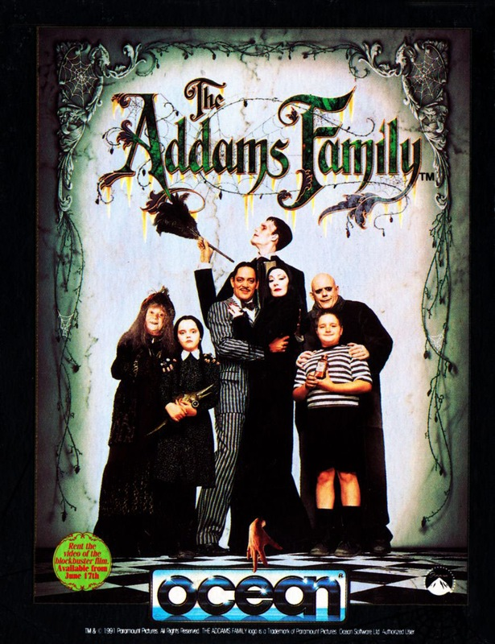
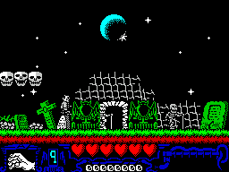
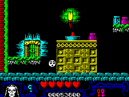

The Addams Family


{kind=link}

| Publisher: | Ocean |
| Price: | £11.99 Cass, £14.99 Disk |
| Year: | 1992 |
| Source: | CRASH, Issue 98 |

It’s spookerama time with severed hands flying around and things that go bump in the night. Sounds a bit like working late in the haunted CRASH Mill! LUCY HICKMAN’s no girl’s blouse (unlike other staff members she could mention) so she was brave enough to stay the night. (Lucy, why’s your hair gone white? — Nick)

Oh Heavy Horribleness! It’s time to scrunch yourself into a ball, batten down the hatches and pretend you’re a very insignificant slug or something ’cos the Addams Family are comin’ to town! We’re in trouble!

For those who’ve been in hibernation (didn’t you know squirrels read CRASH?), the Addams Family include Gomez, a slick dude with an odd moustache, Morticia, a torture freak, Wednesday, who gets off on decapitating dolls, Pugsey, a scab fetishist, Granny who serves up strange froggy meals, and Thing, the family pet hand!
This is one weird tribe, who get their kicks from electrocution, poisoning and causing car crashes (and that’s when they’re in a good mood!). They consider a holiday in the Bermuda Triangle the ultimate and anyone who keeps floating hands as pets has to be a bit tapped.
GO, GO, GOMEZ!

screen for a second! While he’s away
let’s take a peep at his lovely furniture!
The crazy clan first emerged as a cartoon, written by some fella called Charles Addams, who apparently based the characters on his own family — poor unfortunate fool!
In the mid-Sixties they landed their own TV series and their recent hit movie grossed an incredible 20 million bucks in its first two weeks (and a damn good filum it was, too).
With a film licence as big as The Addams Family up for grabs, it had to be Ocean who got their mits on it, the company that’s renowned for excellent graphics and sound but often bottoms out in the playability department. Not any more — this is a game that hooks you from the word go!
The Addams Family packaging should include a pair of sunglasses ’cos the game’s glorious technicolour hits you like a ton of bricks. (Make that sunglasses and a hard hat — preferably yellow with pink spots.)
You play greasy Gomez, whose sole aim is to rescue his family, who’re hiding in their mysterious mansion from the bailiffs out to evict them (oh dear, another bunch who didn’t pay their poll tax). There’s a phoney about, a hideous excuse for a man who’s claiming to be Gomez’s long-lost older brother — Uncle Fester — and thus the sole heir to the entire estate.
And quelle surprise, old Fester-features has brought his rock ’ard mates with him who’re gonna kick your butt unless you get them first.
BONES, BALLS AND BOMBS!
In this flip-screen, multi-coloured platform game, move left and right, up and down (and round and round if it takes your fancy), jump, walk, run and hop (or stand on your head with a banana up each nostril for real thrills). The length of your jumps depends on the type of screen you’re running along.
A multitude of unpleasant dudes are out for your blood so it’s time to make like a skinhead and do some head-stomping. Some die if you land on them, some are stunned, other cantankerous swines refuse to snuff it.
Skeletons collapse into a pile of bones (but magically reform within a few seconds — awkward basts!), flashing balls of lightning give the darkest sun tans and mutated bombs determinedly hop toward you until they’re close enough to blow up in your face!
There are six coloured keys to collect which open the locked doors members of the clan are hiding behind. On finding each relative, jump on their heads (this strange family’s way of showing affection, no doubt) and begin a 60-second survival test.
You’re walled into a particular screen from which there’s no escape until time’s up. Fight off or avoid all the baddies who hurl themselves at you, determined you become an EX Gomez.
There are various pick-ups along the way such as extra lives, points for stomping nasties and hearts to boost your stamina.
Being a reasonable kinda guy, your friendly neighbourhood programmer, Andrew Deakin, and his arty sidekick, Ivan Horn, have included three difficulty levels: easy (hard), medium (damn hard) and difficult (blinkin’ impossible!).
Apart from the wonderful array of colours dragged kicking and screaming into The Addams Family, the backgrounds — both in and out the mansion — sprites and platforms are all brilliantly detailed, the whole thing dripping with lashings and lashings of atmosphere.
A healthy sprinkling of animation, a good dose of excitement and a cheery tune makes this the sort of game which grabs you by the scruff of the neck and drags you, ready or not, back before your Speccy screen for just one more go, again and again.
The Addams Family’s rumoured to be the last Ocean release for the Speccy (cue the wails, sobs and squeals of inconsolable grief). If this is true (please no, anything but that!), they certainly know how to go out on a winner — this game’s a must for anyone’s collection.
LUCY — 90%
Famous Addams’ through history!
- Adam’s Apple: The dreaded fruit Eve gave to her hubby for tea one night, or that rounded bit in your throat that bobs up and down when you warble.
- Grizzly Addams: That bloke with the beard who talked to bears in that terrible Saturday night show.
- Adamski: Techno-wizard who can twinkle with his keyboards and create a masterpiece in seconds!
- Adam Ant: Mr Prince Charming himself, he certainly can stand and deliver (groan!).
- Bryan Adams: Mr Charts 1991, the man who went out and bought millions of copies of his single, ‘Everything I do I do it for you (honest)’, just to keep himself at No.1 for 16 weeks.
- Adam: The one in Home And Away who’s always getting into trouble (are we getting desperate, Nick? — Ed).
- The Adam: The first bloke on the Earth who stupidly created woman by giving God one of his ribs (P45 upstairs, Nicko! — Ed)!
- Sheila Adams: The lady that watches all the company figures, and boy, do the boys like to watch her figure, too!
- Douglas Adams: ’Im who wrote the Hitchhiker stuff. What a spaced-out dude!
- Richard Adams: Wrote lots about bunnies and the things that happen when they get squashed.
CRITICISM

What first hits you about The Addams Family is the amount of colour they’ve crammed into each spooky screen. The backdrops, platforms and sprites are all detailed and there’s lots of great animation. It’s been a long, long time since we saw a platform and ladders game like this on the Spectrum. The last good quality one was Rick Dangerous, and I must admit this bears some similarity, although the programmers assure me it’s unintentional. Playing Gomez is very odd at first. He has a strange jump where he sort of hops a bit then leaps left or right. My first couple of plays were spent bouncing into skeletons and creepy-crawlies — not advisable if you want to get past the first few screens! The Addams Family is a mapper’s nightmare. There’s just one BIG landscape of 240 screens, packed with traps and lots of ghosts and ghoulies. I’ll certainly be playing it late into the night and I advise you to do the same!
NICK — 91%
RATING
A smash hit conversion with all the fun of the film — and more besides!
| Presentation: | 92% |
| Graphics: | 91% |
| Sound: | 90% |
| Playability: | 91% |
| Addictivity: | 92% |
| Overall: | 91% |